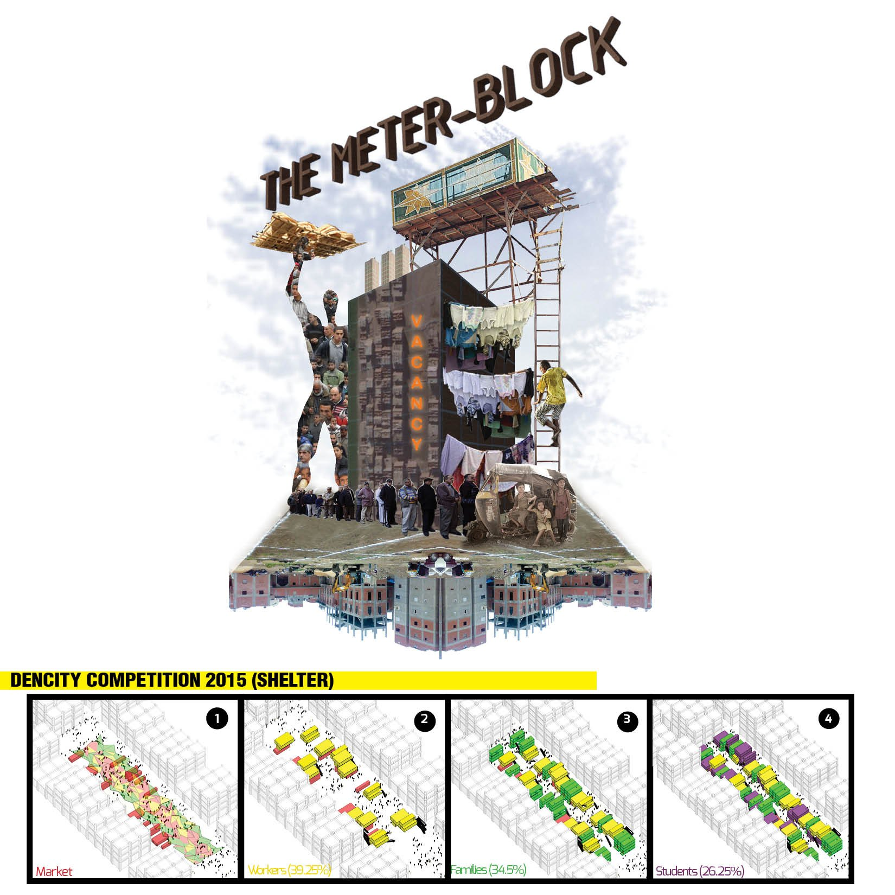
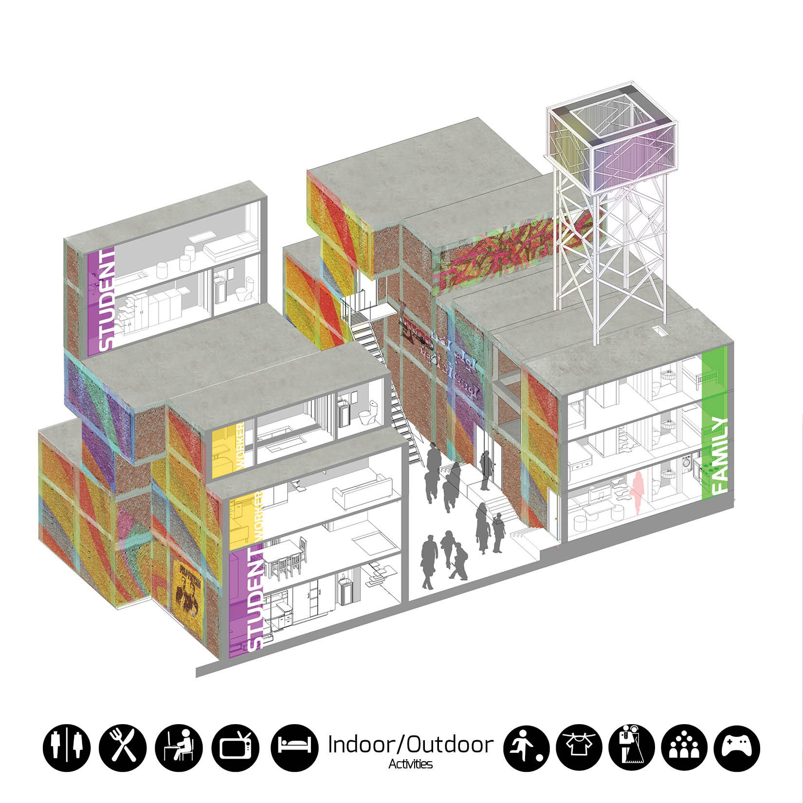

/ COMPETITION
The Meter-Block
A DENCITY 2015 (Shelter) entry for the vacant lots of Greater Cairo — a community-built block that grows incrementally from a ground-floor market into homes for workers, newlyweds and students.

/ CONCEPT
Density that begins with people, not monuments.
The proposal sets out to avoid the “Ozymandias syndrome” of grand but empty gestures. It takes its cue from Edward Ng’s Designing High-Density Cities: “invest in the future and in the quality of life of the people on the street — the optimal densities will follow.”
So the Meter-Block treats a vacant Greater Cairo plot as social infrastructure first. Rather than delivering finished towers, it lays down a framework that residents, shop-owners and community contractors fill in over time — anticipating the steady arrival of rural migrants to the region and the family-like society they bring with them.
Organise
NGOs and professional civic bodies form first — training residents and supervising each stage of the vacant-land development, ahead of the rural migration into Greater Cairo.
Represent
Local leaders are elected from those civic bodies to link residents, shop-owners and the NGOs across the social, economic and managerial life of the project — the route to a self-sufficient community.
Trade
The plot opens as a shaded ground-floor market of shops and social space. Stalls are arranged to leave room for housing to grow above them; market renters can graduate into workers’ studios built with community contractors.
Settle
As workers become self-sufficient and start families, they build their own units alongside those contractors — keeping the family-like social fabric rural communities carry with them. A sense of community, built in.
Drawn from the 2008 census of the site’s informal settlement, the block is sized for three resident types and built up incrementally — a rough guide to how many of each typology the whole block should carry. The four panels above trace that growth, from market to a mix of workers, families and students.
